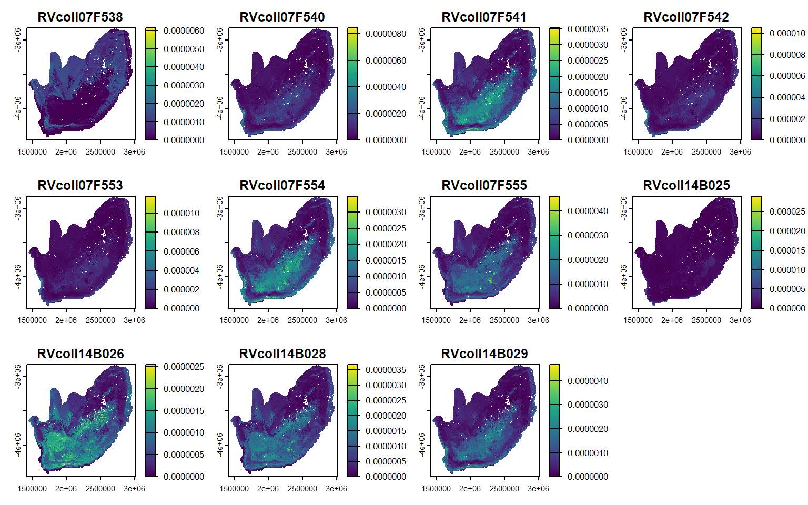
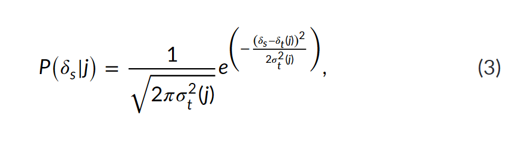

Using the assignR package to estimate geographic origin
Using the assignR package to estimate geographic origin
Modified
October 8, 2026
In this section
You’ll learn: the key idea or skill
You’ll need: packages or data from earlier sections
Time: about 30 minutes
Overview
We will explore how to use the assignR package for isotope-based geographic assignment!
More resources
Ma, C., Vander Zanden, H. B., Wunder, M. B., & Bowen, G. J. (2020). assignR : An R package for isotope‐based geographic assignment. Methods in Ecology and Evolution, (00), 1–6. https://doi.org/10.1111/2041-210x.13426
Let’s do our first isotope-based geographic assignment, then we will explore how it works!
# prepare unknown for pdRasterunknown_Sr<-unknown%>%dplyr::select(Sample_ID, Sr8786)# geographic assignment with assignRSr_probsurfaces<-assignR::pdRaster(r =Sr_iso, unknown =unknown_Sr)

NULL
Going Bayesian
The output maps of isotope-based geographic assignment are called “posterior probability surfaces”
How the pdRaster function works
For each cell, j, the liklihood that the butterfly originated from that location is calculated from a probability density function given:
Symbol
Meaning
Argument in our function
\(\delta_s\)
⁸⁷Sr/⁸⁶Sr of the butterfly
sr_sample
\(\delta_t(j)\)
isoscape prediction (mean) at cell \(j\)
sr_mean
\(\sigma_t(j)\)
prediction uncertainty (SD) at cell \(j\)
sr_sd

:::
Code version
sr_likelihood<-function(sr_sample, sr_mean, sr_sd){if(any(sr_sd<=0))stop("sr_sd (the uncertainty) must be greater than 0.")scaling<-1/sqrt(2*pi*sr_sd^2)# the fraction: height of the curvedistance<-(sr_sample-sr_mean)^2/(2*sr_sd^2)# squared distance, scaled by uncertaintyscaling*exp(-distance)# the full equation}
plot_sr_likelihood<-function(sr_sample, sr_mean, sr_sd){# x-axis: 4 SDs either side of the mean, widened to include the samplex_min<-min(sr_mean-4*sr_sd, sr_sample-sr_sd)x_max<-max(sr_mean+4*sr_sd, sr_sample+sr_sd)curve<-data.frame(sr =seq(x_min, x_max, length.out =500))curve$likelihood<-sr_likelihood(curve$sr, sr_mean, sr_sd)value<-sr_likelihood(sr_sample, sr_mean, sr_sd)z<-abs(sr_sample-sr_mean)/sr_sd# distance from the mean, in SDsggplot(curve, aes(sr, likelihood))+geom_area(fill ="#1f4e6b", alpha =0.12)+geom_line(colour ="#1f4e6b", linewidth =0.9)+geom_vline(xintercept =sr_mean, linetype ="dashed", colour ="grey50")+annotate("segment", x =sr_sample, xend =sr_sample, y =0, yend =value, colour ="#8a3b12", linewidth =0.8)+annotate("point", x =sr_sample, y =value, colour ="#8a3b12", size =3.5)+labs( x =expression({}^87*Sr/{}^86*Sr), y =expression(P(delta[s]~"|"~j)), title =paste("Likelihood =", format(signif(value, 4), big.mark =",")), subtitle =sprintf("Butterfly %.4f | cell mean %.4f | SD %.4f | %.1f SDs from the mean",sr_sample, sr_mean, sr_sd, z))+theme_minimal(base_size =13)}
Holding sr_sd constant, how does the likelihood change if the difference between sr_mean and sr_sample is small?
Holding sr_sd constant, how does the likelihood change if the difference between sr_mean and sr_sample is large?
Holding sr_mean and sr_sample constant, how does modifying sr_sd change the likelihood? How does the probability density curve change?
Which is better: small difference between sr_mean and sr_sample and large sr_sd OR a larger difference between sr_mean and sr_sample and small sr_sd
The sliders only work on this website. If you’re running this page in RStudio, skip the two {ojs} chunks below and use plot_sr_likelihood() instead.
viewof sr_sample = Inputs.range([0.7000,0.7250], {value:0.7105,step:0.0001,label:"δs: butterfly",format: x => x.toFixed(4)})viewof sr_mean = Inputs.range([0.7000,0.7250], {value:0.7100,step:0.0001,label:"δt(j): cell prediction",format: x => x.toFixed(4)})viewof sr_sd = Inputs.range([0.0001,0.0050], {value:0.0010,step:0.0001,label:"σt(j): uncertainty",format: x => x.toFixed(4)})
likelihood = (x, m, s) =>Math.exp(-((x - m) **2) / (2* s **2)) /Math.sqrt(2*Math.PI* s **2)value =likelihood(sr_sample, sr_mean, sr_sd)n_sd =Math.abs(sr_sample - sr_mean) / sr_sdcurve = d3.range(0.7000,0.7250,0.00002).map(x => ({x,y:likelihood(x, sr_mean, sr_sd)}))md`**Likelihood = ${value.toLocaleString(undefined, {maximumSignificantDigits:4})}**· the butterfly is ${n_sd.toFixed(1)} SDs from the prediction· the curve's peak is ${likelihood(sr_mean, sr_mean, sr_sd).toLocaleString(undefined, {maximumFractionDigits:0})}`